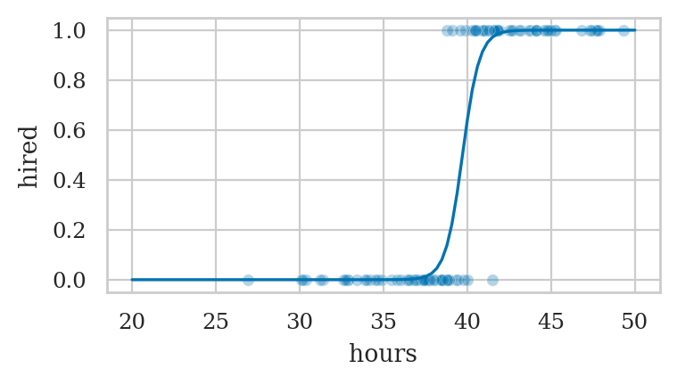
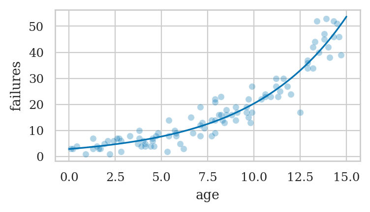
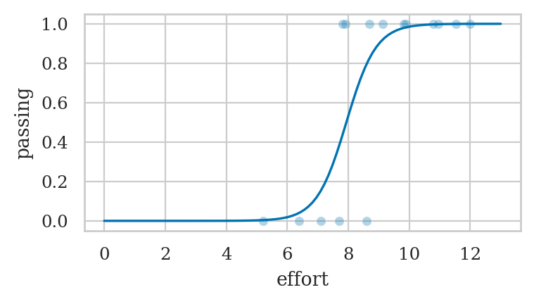
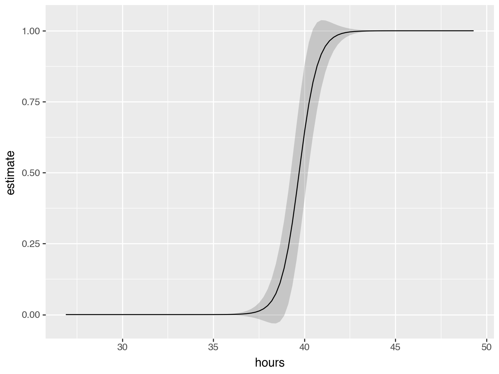
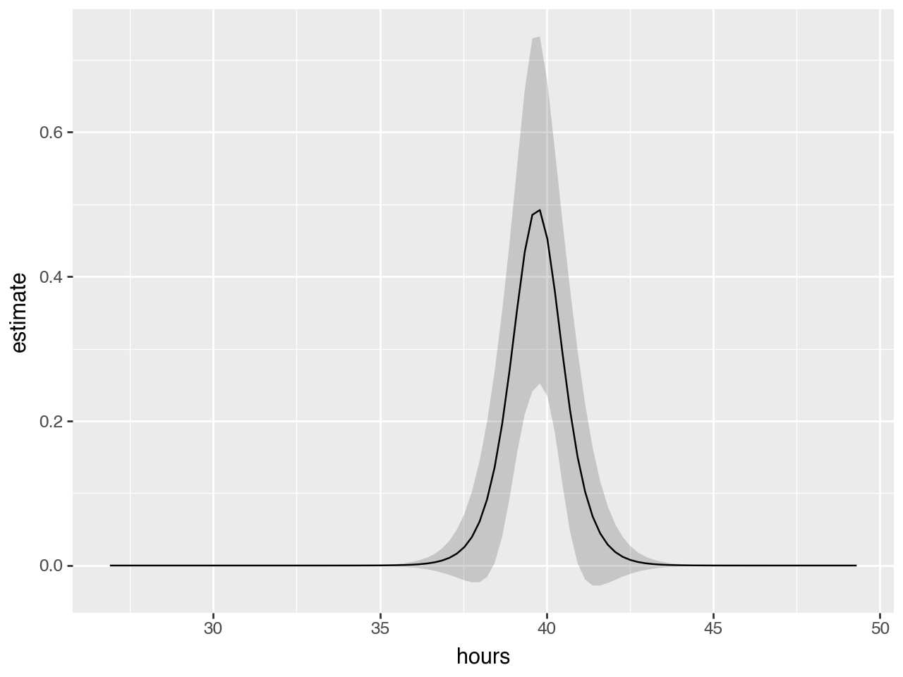

Section 4.6 — Generalized linear models#
This notebook contains the code examples from Section 4.6 Generalized linear models from the No Bullshit Guide to Statistics.
Notebook setup#
# load Python modules
import os
import numpy as np
import pandas as pd
import seaborn as sns
# Figures setup
import matplotlib.pyplot as plt
plt.clf() # needed otherwise `sns.set_theme` doesn't work
from plot_helpers import RCPARAMS
# RCPARAMS.update({'figure.figsize': (10, 3)}) # good for screen
RCPARAMS.update({'figure.figsize': (4, 2)}) # good for print
sns.set_theme(
context="paper",
style="whitegrid",
palette="colorblind",
rc=RCPARAMS,
)
# High-resolution please
%config InlineBackend.figure_format = 'retina'
# Where to store figures
DESTDIR = "figures/lm/generalized"
<Figure size 640x480 with 0 Axes>
Definitions#
def expit(x):
p = np.exp(x) / (1 + np.exp(x))
return p
def logit(p):
x = np.log(p / (1-p))
return x
from scipy.special import logit
from scipy.special import expit
expit(logit(0.3))
0.30000000000000004
logit(expit(5))
5.000000000000019
Odds#
Log-odds#
Logistic regression#
TODO FORMULA
Data generation for logistic regression#
TODO: move to gen_interns.ipynb
from scipy.stats import norm
from scipy.stats import bernoulli
from scipy.special import expit
np.random.seed(42)
n = 100
hours = norm(40, 5).rvs(n)
prob_hired = expit(-80 + 2*hours)
hired = bernoulli(prob_hired).rvs(n)
interns = pd.DataFrame({"hours":hours.round(1),
"hired":hired})
interns.to_csv("../datasets/interns.csv", index=False)
Logistic regression#
Example 1: hiring student interns#
interns = pd.read_csv("../datasets/interns.csv")
interns.head(3)
| hours | hired | |
|---|---|---|
| 0 | 42.5 | 1 |
| 1 | 39.3 | 0 |
| 2 | 43.2 | 1 |
import statsmodels.formula.api as smf
lr1 = smf.logit("hired ~ 1 + hours", data=interns).fit()
print(lr1.params)
Optimization terminated successfully.
Current function value: 0.138101
Iterations 10
Intercept -78.693205
hours 1.981458
dtype: float64
hours = np.linspace(20, 50, 100)
hired_preds = lr1.predict({"hours": hours})
ax = sns.scatterplot(data=interns, x="hours", y="hired", alpha=0.3)
sns.lineplot(x=hours, y=hired_preds, ax=ax);

lr1.summary()
| Dep. Variable: | hired | No. Observations: | 100 |
|---|---|---|---|
| Model: | Logit | Df Residuals: | 98 |
| Method: | MLE | Df Model: | 1 |
| Date: | Fri, 28 Jun 2024 | Pseudo R-squ.: | 0.8005 |
| Time: | 18:37:27 | Log-Likelihood: | -13.810 |
| converged: | True | LL-Null: | -69.235 |
| Covariance Type: | nonrobust | LLR p-value: | 6.385e-26 |
| coef | std err | z | P>|z| | [0.025 | 0.975] | |
|---|---|---|---|---|---|---|
| Intercept | -78.6932 | 19.851 | -3.964 | 0.000 | -117.600 | -39.787 |
| hours | 1.9815 | 0.500 | 3.959 | 0.000 | 1.001 | 2.962 |
Possibly complete quasi-separation: A fraction 0.32 of observations can be
perfectly predicted. This might indicate that there is complete
quasi-separation. In this case some parameters will not be identified.
Prediction#
prob_hired = lr1.predict({"hours":41})
prob_hired[0]
0.9273422944341034
Poisson regression#
Data generation for Poisson regression#
TODO: mv to gen_hdisks.ipynb
from scipy.stats import uniform
from scipy.stats import poisson
np.random.seed(47)
n = 100
age = uniform(0,15).rvs(n)
lam = np.exp(1 + 0.2*age)
failures = poisson(lam).rvs(n)
hdisks = pd.DataFrame({"age":age.round(1),
"failures":failures})
hdisks.to_csv("../datasets/hdisks.csv", index=False)
Example 2: hard disk failures over time#
hdisks = pd.read_csv("../datasets/hdisks.csv")
hdisks.head(3)
| age | failures | |
|---|---|---|
| 0 | 1.7 | 3 |
| 1 | 14.6 | 46 |
| 2 | 10.9 | 23 |
import statsmodels.formula.api as smf
pr2 = smf.poisson("failures ~ 1 + age", data=hdisks).fit()
pr2.params
Optimization terminated successfully.
Current function value: 2.693129
Iterations 6
Intercept 1.075999
age 0.193828
dtype: float64
ages = np.linspace(0, 15, 100)
failures_preds = pr2.predict({"age":ages})
ax = sns.scatterplot(data=hdisks, x="age", y="failures", alpha=0.3)
sns.lineplot(x=ages, y=failures_preds, ax=ax);

pr2.summary()
| Dep. Variable: | failures | No. Observations: | 100 |
|---|---|---|---|
| Model: | Poisson | Df Residuals: | 98 |
| Method: | MLE | Df Model: | 1 |
| Date: | Fri, 28 Jun 2024 | Pseudo R-squ.: | 0.6412 |
| Time: | 18:37:28 | Log-Likelihood: | -269.31 |
| converged: | True | LL-Null: | -750.68 |
| Covariance Type: | nonrobust | LLR p-value: | 2.271e-211 |
| coef | std err | z | P>|z| | [0.025 | 0.975] | |
|---|---|---|---|---|---|---|
| Intercept | 1.0760 | 0.076 | 14.114 | 0.000 | 0.927 | 1.225 |
| age | 0.1938 | 0.007 | 28.603 | 0.000 | 0.181 | 0.207 |
Explanations#
Generalized linear families#
import statsmodels.api as sm
Bin = sm.families.Binomial()
Pois = sm.families.Poisson()
#######################################################
formula = "hired ~ 1 + hours"
glm1 = smf.glm(formula, data=interns, family=Bin).fit()
glm1.params
# glm1.summary()
Intercept -78.693205
hours 1.981458
dtype: float64
#######################################################
formula = "failures ~ 1 + age"
glm2 = smf.glm(formula, data=hdisks, family=Pois).fit()
glm2.params
# glm2.summary()
Intercept 1.075999
age 0.193828
dtype: float64
Discussion#
Model diagnostics#
# Dispersion from GLM attributes
# glm2.pearson_chi2 / glm2.df_resid
# Calculate Pearson chi-squared statistic
observed = hdisks['failures']
predicted = pr2.predict()
pearson_residuals = (observed - predicted) / np.sqrt(predicted)
pearson_chi2 = np.sum(pearson_residuals**2)
df_resid = pr2.df_resid
dispersion = pearson_chi2 / df_resid
print(f'Dispersion: {dispersion}')
# If dispersion > 1, consider Negative Binomial regression
Dispersion: 0.9869289289681199
Exercises#
Exercise: students pass or fail#
students = pd.read_csv('../datasets/students.csv')
students["passing"] = (students["score"] > 70).astype(int)
# students.head()
lmpass = smf.logit("passing ~ 1 + effort", data=students).fit()
print(lmpass.params)
efforts = np.linspace(0, 13, 100)
passing_preds = lmpass.predict({"effort": efforts})
ax = sns.scatterplot(data=students, x="effort", y="passing", alpha=0.3)
sns.lineplot(x=efforts, y=passing_preds, ax=ax);
Optimization terminated successfully.
Current function value: 0.276583
Iterations 8
Intercept -16.257302
effort 2.047882
dtype: float64

lmpass.predict({"effort":8})
0 0.531396
dtype: float64
intercept, b_effort = lmpass.params
expit(intercept + b_effort*8)
0.5313963881248303
Exercise: titanic survival data#
cf. Titanic_Logistic_Regression.ipynb
titanic_raw = pd.read_csv('../datasets/exercises/titanic.csv')
titanic = titanic_raw[['Survived', 'Age', 'Sex', 'Pclass']]
titanic = titanic.dropna()
titanic.head()
---------------------------------------------------------------------------
FileNotFoundError Traceback (most recent call last)
Cell In[27], line 1
----> 1 titanic_raw = pd.read_csv('../datasets/exercises/titanic.csv')
2 titanic = titanic_raw[['Survived', 'Age', 'Sex', 'Pclass']]
3 titanic = titanic.dropna()
File /opt/hostedtoolcache/Python/3.8.18/x64/lib/python3.8/site-packages/pandas/io/parsers/readers.py:912, in read_csv(filepath_or_buffer, sep, delimiter, header, names, index_col, usecols, dtype, engine, converters, true_values, false_values, skipinitialspace, skiprows, skipfooter, nrows, na_values, keep_default_na, na_filter, verbose, skip_blank_lines, parse_dates, infer_datetime_format, keep_date_col, date_parser, date_format, dayfirst, cache_dates, iterator, chunksize, compression, thousands, decimal, lineterminator, quotechar, quoting, doublequote, escapechar, comment, encoding, encoding_errors, dialect, on_bad_lines, delim_whitespace, low_memory, memory_map, float_precision, storage_options, dtype_backend)
899 kwds_defaults = _refine_defaults_read(
900 dialect,
901 delimiter,
(...)
908 dtype_backend=dtype_backend,
909 )
910 kwds.update(kwds_defaults)
--> 912 return _read(filepath_or_buffer, kwds)
File /opt/hostedtoolcache/Python/3.8.18/x64/lib/python3.8/site-packages/pandas/io/parsers/readers.py:577, in _read(filepath_or_buffer, kwds)
574 _validate_names(kwds.get("names", None))
576 # Create the parser.
--> 577 parser = TextFileReader(filepath_or_buffer, **kwds)
579 if chunksize or iterator:
580 return parser
File /opt/hostedtoolcache/Python/3.8.18/x64/lib/python3.8/site-packages/pandas/io/parsers/readers.py:1407, in TextFileReader.__init__(self, f, engine, **kwds)
1404 self.options["has_index_names"] = kwds["has_index_names"]
1406 self.handles: IOHandles | None = None
-> 1407 self._engine = self._make_engine(f, self.engine)
File /opt/hostedtoolcache/Python/3.8.18/x64/lib/python3.8/site-packages/pandas/io/parsers/readers.py:1661, in TextFileReader._make_engine(self, f, engine)
1659 if "b" not in mode:
1660 mode += "b"
-> 1661 self.handles = get_handle(
1662 f,
1663 mode,
1664 encoding=self.options.get("encoding", None),
1665 compression=self.options.get("compression", None),
1666 memory_map=self.options.get("memory_map", False),
1667 is_text=is_text,
1668 errors=self.options.get("encoding_errors", "strict"),
1669 storage_options=self.options.get("storage_options", None),
1670 )
1671 assert self.handles is not None
1672 f = self.handles.handle
File /opt/hostedtoolcache/Python/3.8.18/x64/lib/python3.8/site-packages/pandas/io/common.py:859, in get_handle(path_or_buf, mode, encoding, compression, memory_map, is_text, errors, storage_options)
854 elif isinstance(handle, str):
855 # Check whether the filename is to be opened in binary mode.
856 # Binary mode does not support 'encoding' and 'newline'.
857 if ioargs.encoding and "b" not in ioargs.mode:
858 # Encoding
--> 859 handle = open(
860 handle,
861 ioargs.mode,
862 encoding=ioargs.encoding,
863 errors=errors,
864 newline="",
865 )
866 else:
867 # Binary mode
868 handle = open(handle, ioargs.mode)
FileNotFoundError: [Errno 2] No such file or directory: '../datasets/exercises/titanic.csv'
formula = "Survived ~ Age + C(Sex) + C(Pclass)"
lrtitanic = smf.logit(formula, data=titanic).fit()
lrtitanic.params
Optimization terminated successfully.
Current function value: 0.453279
Iterations 6
Intercept 3.777013
C(Sex)[T.male] -2.522781
C(Pclass)[T.2] -1.309799
C(Pclass)[T.3] -2.580625
Age -0.036985
dtype: float64
# Cross check with sklearn
from sklearn.linear_model import LogisticRegression
df = pd.get_dummies(titanic, columns=['Sex', 'Pclass'], drop_first=True)
X, y = df.drop('Survived', axis=1), df['Survived']
sktitanic = LogisticRegression(penalty=None)
sktitanic.fit(X, y)
sktitanic.intercept_, sktitanic.coef_
(array([3.77702703]),
array([[-0.03698571, -2.52276365, -1.30981349, -2.58063585]]))
Exercise: student admissions dataset#
# data = whether students got admitted (admit=1) or not (admit=0) based on their gre and gpa scores, and the rank of their instutution
# raw_data = pd.read_csv('https://stats.idre.ucla.edu/stat/data/binary.csv')
binary = pd.read_csv('../datasets/exercises/binary.csv')
binary.head(3)
| admit | gre | gpa | rank | |
|---|---|---|---|---|
| 0 | 0 | 380 | 3.61 | 3 |
| 1 | 1 | 660 | 3.67 | 3 |
| 2 | 1 | 800 | 4.00 | 1 |
lrbinary = smf.logit('admit ~ gre + gpa + C(rank)', data=binary).fit()
lrbinary.params
Optimization terminated successfully.
Current function value: 0.573147
Iterations 6
Intercept -3.989979
C(rank)[T.2] -0.675443
C(rank)[T.3] -1.340204
C(rank)[T.4] -1.551464
gre 0.002264
gpa 0.804038
dtype: float64
The above model uses the rank=1 as the reference category an the log odds reported are with respect to this catrgory
etc. for others rank[T.3] -1.340204 rank[T.4] -1.551464
See LogisticRegressionChangeOfReferenceCategoricalValue.ipynb for exercise recodign relative to different refrence level.
# Cross check with sklearn
from sklearn.linear_model import LogisticRegression
df = pd.get_dummies(binary, columns=['rank'], drop_first=True)
X, y = df.drop("admit", axis=1), df["admit"]
lr = LogisticRegression(solver="lbfgs", penalty=None, max_iter=1000)
lr.fit(X, y)
lr.intercept_, lr.coef_
(array([-3.99001587]),
array([[ 0.00226442, 0.80404719, -0.67543916, -1.3401993 , -1.5514551 ]]))
Exercise: LA high schools (NOT A VERY GOOD FIT FOR POISSON MODEL)#
Dataset info: http://www.philender.com/courses/intro/assign/data.html
This dataset consists of data from computer exercises collected from two high school in the Los Angeles area.
http://www.philender.com/courses/intro/code.html
lahigh_raw = pd.read_stata("https://stats.idre.ucla.edu/stat/stata/notes/lahigh.dta")
lahigh = lahigh_raw.convert_dtypes()
lahigh["gender"] = lahigh["gender"].astype(object).replace({1:"F", 2:"M"})
lahigh["ethnic"] = lahigh["ethnic"].astype(object).replace({
1:"Native American",
2:"Asian",
3:"African-American",
4:"Hispanic",
5:"White",
6:"Filipino",
7:"Pacific Islander"})
lahigh["school"] = lahigh["school"].astype(object).replace({1:"Alpha", 2:"Beta"})
lahigh
| id | gender | ethnic | school | mathpr | langpr | mathnce | langnce | biling | daysabs | |
|---|---|---|---|---|---|---|---|---|---|---|
| 0 | 1001 | M | Hispanic | Alpha | 63 | 36 | 56.988831 | 42.450859 | 2 | 4 |
| 1 | 1002 | M | Hispanic | Alpha | 27 | 44 | 37.094158 | 46.820587 | 2 | 4 |
| 2 | 1003 | F | Hispanic | Alpha | 20 | 38 | 32.275455 | 43.566574 | 2 | 2 |
| 3 | 1004 | F | Hispanic | Alpha | 16 | 38 | 29.056717 | 43.566574 | 2 | 3 |
| 4 | 1005 | F | Hispanic | Alpha | 2 | 14 | 6.748048 | 27.248474 | 3 | 3 |
| ... | ... | ... | ... | ... | ... | ... | ... | ... | ... | ... |
| 311 | 2153 | M | Hispanic | Beta | 26 | 46 | 36.451145 | 47.884865 | 2 | 1 |
| 312 | 2154 | F | White | Beta | 79 | 81 | 66.983231 | 68.488495 | 2 | 3 |
| 313 | 2155 | F | Hispanic | Beta | 59 | 56 | 54.792099 | 53.179413 | 0 | 0 |
| 314 | 2156 | F | White | Beta | 90 | 82 | 76.989479 | 69.277588 | 0 | 0 |
| 315 | 2157 | F | White | Beta | 77 | 84 | 65.560112 | 70.943283 | 0 | 2 |
316 rows × 10 columns
lahigh
| id | gender | ethnic | school | mathpr | langpr | mathnce | langnce | biling | daysabs | |
|---|---|---|---|---|---|---|---|---|---|---|
| 0 | 1001 | M | Hispanic | Alpha | 63 | 36 | 56.988831 | 42.450859 | 2 | 4 |
| 1 | 1002 | M | Hispanic | Alpha | 27 | 44 | 37.094158 | 46.820587 | 2 | 4 |
| 2 | 1003 | F | Hispanic | Alpha | 20 | 38 | 32.275455 | 43.566574 | 2 | 2 |
| 3 | 1004 | F | Hispanic | Alpha | 16 | 38 | 29.056717 | 43.566574 | 2 | 3 |
| 4 | 1005 | F | Hispanic | Alpha | 2 | 14 | 6.748048 | 27.248474 | 3 | 3 |
| ... | ... | ... | ... | ... | ... | ... | ... | ... | ... | ... |
| 311 | 2153 | M | Hispanic | Beta | 26 | 46 | 36.451145 | 47.884865 | 2 | 1 |
| 312 | 2154 | F | White | Beta | 79 | 81 | 66.983231 | 68.488495 | 2 | 3 |
| 313 | 2155 | F | Hispanic | Beta | 59 | 56 | 54.792099 | 53.179413 | 0 | 0 |
| 314 | 2156 | F | White | Beta | 90 | 82 | 76.989479 | 69.277588 | 0 | 0 |
| 315 | 2157 | F | White | Beta | 77 | 84 | 65.560112 | 70.943283 | 0 | 2 |
316 rows × 10 columns
formula = "daysabs ~ 1 + mathnce + langnce + C(gender)"
prlahigh = smf.poisson(formula, data=lahigh).fit()
prlahigh.params
Optimization terminated successfully.
Current function value: 4.898642
Iterations 5
Intercept 2.687666
C(gender)[T.M] -0.400921
mathnce -0.003523
langnce -0.012152
dtype: float64
# IRR
np.exp(prlahigh.params[1:])
C(gender)[T.M] 0.669703
mathnce 0.996483
langnce 0.987921
dtype: float64
# CI for IRR F
np.exp(prlahigh.conf_int().loc["C(gender)[T.M]"])
0 0.609079
1 0.736361
Name: C(gender)[T.M], dtype: float64
# prlahigh.summary()
# prlahigh.aic, prlahigh.bic
prlahigh.summary()
| Dep. Variable: | daysabs | No. Observations: | 316 |
|---|---|---|---|
| Model: | Poisson | Df Residuals: | 312 |
| Method: | MLE | Df Model: | 3 |
| Date: | Fri, 28 Jun 2024 | Pseudo R-squ.: | 0.05358 |
| Time: | 12:49:24 | Log-Likelihood: | -1548.0 |
| converged: | True | LL-Null: | -1635.6 |
| Covariance Type: | nonrobust | LLR p-value: | 9.246e-38 |
| coef | std err | z | P>|z| | [0.025 | 0.975] | |
|---|---|---|---|---|---|---|
| Intercept | 2.6877 | 0.073 | 36.994 | 0.000 | 2.545 | 2.830 |
| C(gender)[T.M] | -0.4009 | 0.048 | -8.281 | 0.000 | -0.496 | -0.306 |
| mathnce | -0.0035 | 0.002 | -1.934 | 0.053 | -0.007 | 4.66e-05 |
| langnce | -0.0122 | 0.002 | -6.623 | 0.000 | -0.016 | -0.009 |
Diagnostics#
via https://www.statsmodels.org/dev/examples/notebooks/generated/postestimation_poisson.html
prdiag = prlahigh.get_diagnostic()
# Plot observed versus predicted frequencies for entire sample
# prdiag.plot_probs();
# Other:
# ['plot_probs',
# 'probs_predicted',
# 'results',
# 'test_chisquare_prob',
# 'test_dispersion',
# 'test_poisson_zeroinflation',
# 'y_max']
# Code to get exactly the same numbers as in
# https://stats.oarc.ucla.edu/stata/output/poisson-regression/
formula2 = "daysabs ~ 1 + mathnce + langnce + C(gender, Treatment(1))"
prlahigh2 = smf.poisson(formula2, data=lahigh).fit()
prlahigh2.params
Optimization terminated successfully.
Current function value: 4.898642
Iterations 5
Intercept 2.286745
C(gender, Treatment(1))[T.F] 0.400921
mathnce -0.003523
langnce -0.012152
dtype: float64
Exercise: asthma attacks#
data drkamarul/multivar_data_analysis
asthma = pd.read_csv("../datasets/exercises/asthma.csv")
asthma
| gender | res_inf | ghq12 | attack | |
|---|---|---|---|---|
| 0 | female | yes | 21 | 6 |
| 1 | male | no | 17 | 4 |
| 2 | male | yes | 30 | 8 |
| 3 | female | yes | 22 | 5 |
| 4 | male | yes | 27 | 2 |
| ... | ... | ... | ... | ... |
| 115 | male | yes | 0 | 2 |
| 116 | female | yes | 31 | 2 |
| 117 | female | yes | 18 | 2 |
| 118 | female | yes | 21 | 3 |
| 119 | female | yes | 11 | 2 |
120 rows × 4 columns
cf. https://bookdown.org/drki_musa/dataanalysis/poisson-regression.html#multivariable-analysis-1
Exercise: ship accidents#
https://rdrr.io/cran/AER/man/ShipAccidents.html
https://pages.stern.nyu.edu/~wgreene/Text/tables/tablelist5.htm
https://pages.stern.nyu.edu/~wgreene/Text/tables/TableF21-3.txt
Links#
CUT MATERIAL#
Marginal effects#
https://marginaleffects.com/vignettes/slopes.html
import marginaleffects as me
# dir(me)
Parameters#
lr1.summary().tables[1]
| coef | std err | z | P>|z| | [0.025 | 0.975] | |
|---|---|---|---|---|---|---|
| Intercept | -78.6932 | 19.851 | -3.964 | 0.000 | -117.600 | -39.787 |
| hours | 1.9815 | 0.500 | 3.959 | 0.000 | 1.001 | 2.962 |
lr1.params["hours"]
1.9814577697476699
Average marginal effect (AME)#
me.avg_slopes(lr1).to_pandas()
| term | contrast | estimate | std_error | statistic | p_value | s_value | conf_low | conf_high | |
|---|---|---|---|---|---|---|---|---|---|
| 0 | hours | mean(dY/dX) | 0.08077 | 0.00422 | 19.138224 | 0.0 | inf | 0.072498 | 0.089042 |
lr1.get_margeff().summary()
| Dep. Variable: | hired |
|---|---|
| Method: | dydx |
| At: | overall |
| dy/dx | std err | z | P>|z| | [0.025 | 0.975] | |
|---|---|---|---|---|---|---|
| hours | 0.0808 | 0.004 | 19.139 | 0.000 | 0.072 | 0.089 |
Marginal effect at the mean (MEM)#
me.slopes(lr1, newdata = "mean").to_pandas()
| term | contrast | estimate | std_error | statistic | p_value | s_value | conf_low | conf_high | |
|---|---|---|---|---|---|---|---|---|---|
| 0 | hours | dY/dX | 0.47034 | 0.121818 | 3.861021 | 0.000113 | 13.112488 | 0.231582 | 0.709098 |
lr1.get_margeff(at="mean").summary()
| Dep. Variable: | hired |
|---|---|
| Method: | dydx |
| At: | mean |
| dy/dx | std err | z | P>|z| | [0.025 | 0.975] | |
|---|---|---|---|---|---|---|
| hours | 0.4703 | 0.122 | 3.865 | 0.000 | 0.232 | 0.709 |
# 'plot_common',
# 'plot_comparisons',
# 'plot_predictions',
# 'plot_slopes',
# 'predictions',
# 'slopes'
me.plot_predictions(lr1, condition="hours")

me.plot_slopes(lr1, condition="hours")
